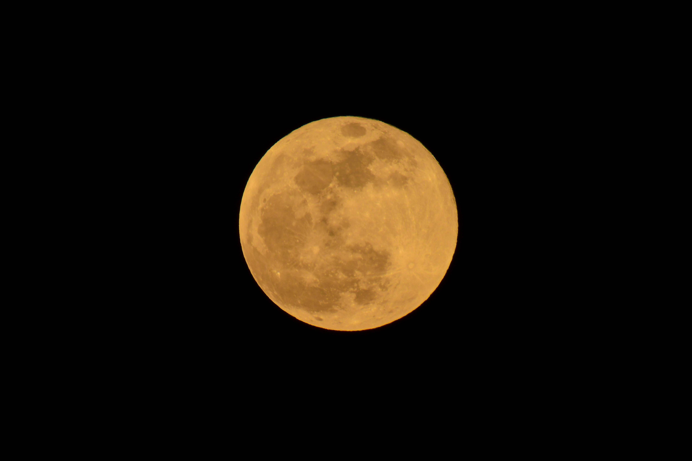

<！DOCTYPE html>
  <html>

  <head lang="en">
    <meta charset="UTF-8">
    <title>流星雨</title>
    <style>
      body {
        background-color: #000000;
      }

      body,
      html {
        width: 100%;
        height: 100%;
        overflow: hidden;
      }

      h1 {
        position: absolute;
        left: 5%;
        animation: num 30s linear infinite;
      }

      @keyframes num {

        /*动画*/
        0% {
          width: 450px;
          transform: translate(0px, -40px);
        }

        25% {
          width: 450px;
          transform: translate(1400px, 30px);
        }

        50% {
          width: 450px;
          transform: translate(0px, 40px);
        }

        70% {
          width: 450px;
          transform: translate(1400px, -30px);
        }

        100% {
          width: 450px;
          transform: translate(0px, -40px);
        }
      }
    </style>
  </head>

  <body>
    <!-- 月亮图片 -->
    
    <canvas id="stars"></canvas>
  </body>
  <script>
    let context; // 整个上下文
    let arr = new Array(); //星星数组
    let startCount = 800; //星星开始数量

    let rains = new Array(); //流星数组
    var rainCount = 20; //流星数量

    //初始画布及context
    function init() {
      //获取canvas
      let stars = document.getElementById('stars')
      //获取当前窗口的宽度和高度
      stars.width = window.innerWidth;
      stars.height = window.innerHeight;
      //获取上下文context
      context = stars.getContext("2d") //返回画布2d环境画面效果
    }

    //创建星星对象
    function Star() {
      this.x = window.innerWidth * Math.random(); //横坐标 = 窗口宽度乘1以内的随机数
      this.y = 5000 * Math.random(); //纵坐标（窗口高度为5000乘以1以内的随机数）
      this.text = "."; //星星文本
      this.color = "white"; //星星颜色

      //产生随机黑白方法
      this.getColor = function () {
        let r = Math.random(); //获取随机数
        if (r < 0.5) {
          this.color = "#000000"; //黑色
        } else {
          this.color = "white"; //白色
        }
      }
      //初始化
      this.init = function () {
        this.getColor();
      }
      //绘制
      this.draw = function () {
        context.fillStyle = this.color; //填入颜色
        //text:规定在画布上的输出文本
        //x：开始绘制文本的下坐标位置y
        //y：开始绘制文本的y坐标位置
        context.fillText(this.text, this.x, this.y)
      }
    }

    window.onload = function () {
      init()
      //画星星
      for (let i = 0; i < startCount; i++) {
        let star = new Star()
        star.init()
        star.draw()
        arr.push(star)
      }
      //画流星
      for (let i = 0; i < rainCount; i++) {
        let rain = new meteorRain();
        rain.init();
        rain.draw();
        rains.push(rain)
      }
      starsFlash() //绘制星星闪烁
      playMeteorRain() //绘制流星
    }

    //星星闪烁方法
    function starsFlash() {
      //循环遍历数组，让每一个星星闪动
      for (let i = 0; i < startCount; i++) {
        arr[i].getColor();
        arr[i].draw();
      }
      setTimeout("starsFlash()", 100)
    }

    //流星雨
    function meteorRain() {
      this.x = -1;
      this.y = -1;
      this.length = -1 //长度
      this.angle = 30 //倾斜角度
      this.width = -1; //宽度
      this.height = -1; //高度
      this.speed = 1 //速度
      this.offset_x = -1; //横坐标移动偏移量
      this.offset_y = -1; //纵坐标移动偏移量
      this.alpha = 1; //透明度
      this.color = ""; //流星色彩
      this.color2 = "" //流星2的色彩
      this.init = function () //初始化
{
this.getPos();
this.alpha = 1;//透明度
this.getRandomColor();
//最小长度，最大长度
var x = Math.random() * 80 + 150;
this.length = Math.ceil(x);
// x = Math.random()*10+30;
this.angle = 30; //流星倾斜角
x = Math.random()+0.5;
this.speed = Math.ceil(x); //流星的速度
var cos = Math.cos(this.angle*3.14/180);
var sin = Math.sin(this.angle*3.14/180) ;
this.width = this.length*cos ; //流星所占宽度
this.height = this.length*sin ;//流星所占高度
this.offset_x = this.speed*cos ;
this.offset_y = this.speed*sin;
}
/**************获取随机颜色函数*****************/
this.getRandomColor = function (){
var a = Math.ceil(255-240* Math.random());
//中段颜色
this.color1 = "rgba("+a+","+a+","+a+",1)";
//结束颜色
this.color2 = "black";
}
/***************重新计算流星坐标的函数******************/
this.countPos = function ()//
{
//往左下移动,x减少，y增加
this.x = this.x - this.offset_x;
this.y = this.y + this.offset_y;
}
/*****************获取随机坐标的函数*****************/
this.getPos = function () //
{
//横坐标200--1200
this.x = Math.random() * window.innerWidth; //窗口高度
//纵坐标小于600
this.y = Math.random() * window.innerHeight; //窗口宽度
}
/****绘制流星***************************/
this.draw = function () //绘制一个流星的函数
{
context.save();
context.beginPath();
context.lineWidth = 1; //宽度
context.globalAlpha = this.alpha; //设置透明度
//创建横向渐变颜色,起点坐标至终点坐标
var line = context.createLinearGradient(this.x, this.y,
this.x + this.width,
this.y - this.height);
//分段设置颜色
line.addColorStop(0, "white");
line.addColorStop(0.3, this.color1);
line.addColorStop(0.6, this.color2);
context.strokeStyle = line;
//起点
context.moveTo(this.x, this.y);
//终点
context.lineTo(this.x + this.width, this.y - this.height);
context.closePath();
context.stroke();
context.restore();
}
this.move = function(){
//清空流星像素
var x = this.x+this.width-this.offset_x;
var y = this.y-this.height;
context.clearRect(x-3,y-3,this.offset_x+5,this.offset_y+5);
// context.strokeStyle="red";
// context.strokeRect(x,y-1,this.offset_x+1,this.offset_y+1);
//重新计算位置，往左下移动
this.countPos();
//透明度增加
this.alpha -= 0.002;
//重绘
this.draw();
}
     
    }
    //绘制流星
    function playMeteorRain() {
      for (let i = 0; i < rainCount; i++) {
        let rain = rains[i];
        rain.move(); //移动
        if (rain.y > window.innerHeight) { //超出界限后重来
          context.clearRect(rain.x, rain.y - rain.height, rain.width, rain.height);
          rains[i] = new meteorRain() //创建一个流星对象
          rains[i].init() //调用流星初始化方法
        }
      }
      setTimeout("playMeteorRain()", 3)
    }
  </script>

  </html>